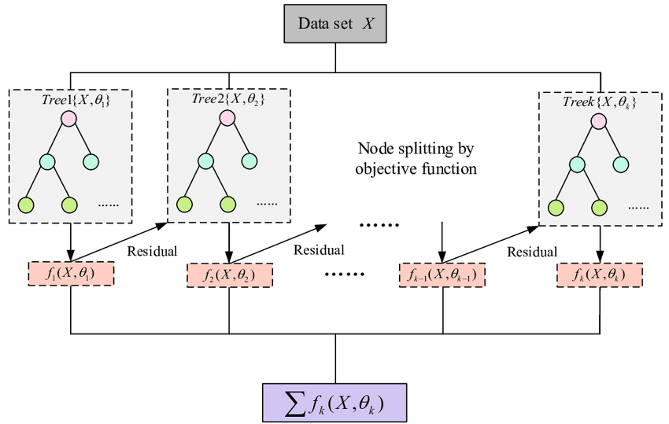

# Base Libraries
import numpy as np
import pandas as pd
# Data Prep
from sklearn.datasets import load_breast_cancer
from sklearn.model_selection import train_test_split
# Model Fine Tuning
import optuna
# Model Performance
from sklearn.metrics import classification_report
# Data Visualization
import plotly.express as pxXGBoost
By Cristian Leo
Link Article: https://medium.com/(cristianleo120/the-math-behind-xgboost-3068c78aad9d?)

## Import Required LibrariesClass Node
class Node:
"""
A node class for a decision tree.
"""
def __init__(self, x, gradient, hessian, idxs, subsample_cols=1 , min_leaf=5, min_child_weight=1 ,depth=10, lambda_=1, gamma=1, eps=0.1):
"""
Constructor to initialize the node with data and parameters.
Parameters:
- x: Input data for the node.
- gradient: Gradient information for gradient boosting.
- hessian: Hessian information for second-order optimization.
- idxs: Indices of the data points in the node.
- subsample_cols: Fraction of columns to consider for splitting.
- min_leaf: Minimum number of samples required in a leaf node.
- min_child_weight: Minimum sum of instance weight(hessian) needed in a child.
- depth: Maximum depth of the tree.
- lambda_: Regularization parameter.
- gamma: Minimum loss reduction required to make a further partition.
- eps: Epsilon value for quantile sketch method.
"""
self.x, self.gradient, self.hessian = x, gradient, hessian
self.idxs = idxs
self.depth = depth
self.min_leaf = min_leaf
self.lambda_ = lambda_
self.gamma = gamma
self.min_child_weight = min_child_weight
self.row_count = len(idxs)
self.col_count = x.shape[1]
self.subsample_cols = subsample_cols
self.eps = eps
self.column_subsample = np.random.permutation(self.col_count)[:round(self.subsample_cols*self.col_count)]
self.val = self.compute_gamma(self.gradient[self.idxs], self.hessian[self.idxs])
self.score = float('-inf')
self.find_varsplit()
def compute_gamma(self, gradient, hessian):
"""
Computes the gamma value for the node.
Gamma is calculated as negative sum of gradient divided by the sum of hessian plus lambda.
Parameters:
- gradient: Gradient information for gradient boosting.
- hessian: Hessian information for second-order optimization.
Returns:
- gamma: Gamma value for the node.
"""
return(-np.sum(gradient)/(np.sum(hessian) + self.lambda_))
def find_varsplit(self):
"""
Identifies the best variable to split on.
Iterates through the subset of columns and finds the best greedy split.
"""
for c in self.column_subsample: self.find_greedy_split(c)
if self.is_leaf: return
x = self.split_col
lhs = np.nonzero(x <= self.split)[0]
rhs = np.nonzero(x > self.split)[0]
self.lhs = Node(x = self.x, gradient = self.gradient, hessian = self.hessian, idxs = self.idxs[lhs], min_leaf = self.min_leaf, depth = self.depth-1, lambda_ = self.lambda_ , gamma = self.gamma, min_child_weight = self.min_child_weight, eps = self.eps, subsample_cols = self.subsample_cols)
self.rhs = Node(x = self.x, gradient = self.gradient, hessian = self.hessian, idxs = self.idxs[rhs], min_leaf = self.min_leaf, depth = self.depth-1, lambda_ = self.lambda_ , gamma = self.gamma, min_child_weight = self.min_child_weight, eps = self.eps, subsample_cols = self.subsample_cols)
def find_greedy_split(self, var_idx):
"""
Finds the best split point for a given variable using a greedy approach.
Iterates through each row and evaluates potential splits.
Parameters:
- var_idx: Index of the variable to split on.
"""
x = self.x[self.idxs, var_idx]
for r in range(self.row_count):
lhs = x <= x[r]
rhs = x > x[r]
lhs_indices = np.nonzero(lhs)[0]
rhs_indices = np.nonzero(rhs)[0]
lhs_sum = self.hessian[lhs_indices].sum()
rhs_sum = self.hessian[rhs_indices].sum()
# Ensures minimum leaf size and child weight before considering the split.
if(rhs.sum() < self.min_leaf or lhs.sum() < self.min_leaf
or lhs_sum < self.min_child_weight
or rhs_sum < self.min_child_weight): continue
curr_score = self.gain(lhs, rhs)
# Updates the best split if a better score is found.
if curr_score > self.score:
self.var_idx = var_idx
self.score = curr_score
self.split = x[r]
def weighted_qauntile_sketch(self, var_idx):
"""
Finds the best split point for a given variable using a weighted quantile sketch approach.
Iterates through each row and evaluates potential splits.
Parameters:
- var_idx: Index of the variable to split on.
"""
x = self.x[self.idxs, var_idx]
hessian_ = self.hessian[self.idxs]
df = pd.DataFrame({'feature':x,'hess':hessian_})
df.sort_values(by=['feature'], ascending = True, inplace = True)
hess_sum = df['hess'].sum()
df['rank'] = df.apply(lambda x : (1/hess_sum)*sum(df[df['feature'] < x['feature']]['hess']), axis=1)
for row in range(df.shape[0]-1):
# look at the current rank and the next ran
rk_sk_j, rk_sk_j_1 = df['rank'].iloc[row:row+2]
diff = abs(rk_sk_j - rk_sk_j_1)
if(diff >= self.eps):
continue
split_value = (df['rank'].iloc[row+1] + df['rank'].iloc[row])/2
lhs = x <= split_value
rhs = x > split_value
lhs_indices = np.nonzero(x <= split_value)[0]
rhs_indices = np.nonzero(x > split_value)[0]
if(rhs.sum() < self.min_leaf or lhs.sum() < self.min_leaf
or self.hessian[lhs_indices].sum() < self.min_child_weight
or self.hessian[rhs_indices].sum() < self.min_child_weight): continue
curr_score = self.gain(lhs, rhs)
if curr_score > self.score:
self.var_idx = var_idx
self.score = curr_score
self.split = split_value
def gain(self, lhs, rhs):
"""
Computes the gain in loss function for a given split.
Parameters:
- lhs: Left hand side of the split.
- rhs: Right hand side of the split.
Returns:
- gain: Gain in loss function for the split.
"""
gradient = self.gradient[self.idxs]
hessian = self.hessian[self.idxs]
lhs_gradient = gradient[lhs].sum()
lhs_hessian = hessian[lhs].sum()
rhs_gradient = gradient[rhs].sum()
rhs_hessian = hessian[rhs].sum()
total_gradient = lhs_gradient + rhs_gradient
total_hessian = lhs_hessian + rhs_hessian
gain = 0.5 *( (lhs_gradient**2/(lhs_hessian + self.lambda_)) + (rhs_gradient**2/(rhs_hessian + self.lambda_)) - (total_gradient**2/(total_hessian + self.lambda_))) - self.gamma
return(gain)
@property
def split_col(self):
"""
Returns the column of the split variable.
"""
return self.x[self.idxs , self.var_idx]
@property
def is_leaf(self):
"""
Returns True if the node is a leaf node.
"""
return self.score == float('-inf') or self.depth <= 0
def predict(self, x):
"""
Predicts the value for a given input.
Parameters:
- x: Input data.
Returns:
- np.array: Predicted values.
"""
return np.array([self.predict_row(xi) for xi in x])
def predict_row(self, xi):
"""
Predicts the value for a given input row.
Parameters:
- xi: Input row.
Returns:
- np.array: Predicted value.
"""
if self.is_leaf:
return(self.val)
node = self.lhs if xi[self.var_idx] <= self.split else self.rhs
return node.predict_row(xi)XGBoost Tree Class
class XGBoostTree:
def fit(self, x, gradient, hessian, subsample_cols = 0.8 , min_leaf = 5, min_child_weight = 1 ,depth = 10, lambda_ = 1, gamma = 1, eps = 0.1):
"""
Fits a decision tree to the data.
Parameters:
- x: Input data.
- gradient: Gradient information for gradient boosting.
- hessian: Hessian information for second-order optimization.
- subsample_cols: Fraction of columns to consider for splitting.
- min_leaf: Minimum number of samples required in a leaf node.
- min_child_weight: Minimum sum of instance weight(hessian) needed in a child.
- depth: Maximum depth of the tree.
- lambda_: Regularization parameter.
- gamma: Minimum loss reduction required to make a further partition.
- eps: Epsilon value for quantile sketch method.
Returns:
- self: Trained decision tree.
"""
self.dtree = Node(x, gradient, hessian, np.array(np.arange(len(x))), subsample_cols, min_leaf, min_child_weight, depth, lambda_, gamma, eps)
return self
def predict(self, X):
"""
Predicts the value for a given input.
Parameters:
- X: Input data.
Returns:
- np.array: Predicted values.
"""
return self.dtree.predict(X)XGBoost Classifier Class
class XGBoostClassifier:
def __init__(self, random_state=None):
self.estimators = []
self.random_state = random_state
np.random.seed(self.random_state)
@staticmethod
def sigmoid(x):
"""
Computes the sigmoid function.
Parameters:
- x: Input data.
Returns:
- np.array: Sigmoid of the input data.
"""
return 1 / (1 + np.exp(-x))
def grad(self, preds, labels):
"""
Computes the gradient of the log loss function.
Parameters:
- preds: Predicted values.
- labels: Actual values.
Returns:
- np.array: Gradient of the log loss function.
"""
preds = self.sigmoid(preds)
return(preds - labels)
def hess(self, preds, labels):
"""
Computes the hessian of the log loss function.
Parameters:
- preds: Predicted values.
Returns:
- np.array: Hessian of the log loss function.
"""
preds = self.sigmoid(preds)
return(preds * (1 - preds))
@staticmethod
def log_odds(column):
"""
Computes the log odds of a binary variable.
Parameters:
- column: Binary variable.
Returns:
- np.array: Log odds of the binary variable.
"""
binary_yes = np.count_nonzero(column == 1)
binary_no = np.count_nonzero(column == 0)
return(np.log(binary_yes/binary_no))
def fit(self, X, y, subsample_cols=1 , min_child_weight=1, depth=5, min_leaf=5, learning_rate=0.1, boosting_rounds=10, lambda_=1.5, gamma=1, eps=0.1):
"""
Fits a gradient boosted decision tree to the data.
Parameters:
- X: Input data.
- y: Target variable.
- subsample_cols: Fraction of columns to consider for splitting.
- min_leaf: Minimum number of samples required in a leaf node.
- min_child_weight: Minimum sum of instance weight(hessian) needed in a child.
- depth: Maximum depth of the tree.
- lambda_: Regularization parameter.
- gamma: Minimum loss reduction required to make a further partition.
- eps: Epsilon value for quantile sketch method.
- learning_rate: Learning rate for gradient boosting.
- boosting_rounds: Number of boosting rounds.
Returns:
- self: Trained gradient boosted decision tree.
"""
self.X, self.y = X, y
self.depth = depth
self.subsample_cols = subsample_cols
self.eps = eps
self.min_child_weight = min_child_weight
self.min_leaf = min_leaf
self.learning_rate = learning_rate
self.boosting_rounds = boosting_rounds
self.lambda_ = lambda_
self.gamma = gamma
self.base_pred = np.full((X.shape[0], 1), 1).flatten().astype('float64')
Grad = self.grad(self.base_pred, self.y)
Hess = self.hess(self.base_pred, self.y)
for _ in range(self.boosting_rounds):
boosting_tree = XGBoostTree().fit(self.X, Grad, Hess, depth = self.depth, min_leaf = self.min_leaf, lambda_ = self.lambda_, gamma = self.gamma, eps = self.eps, min_child_weight = self.min_child_weight, subsample_cols = self.subsample_cols)
self.base_pred += self.learning_rate * boosting_tree.predict(self.X)
self.estimators.append(boosting_tree)
def predict_proba(self, X):
"""
Predicts the probability of the positive class for a given input.
Parameters:
- X: Input data.
Returns:
- np.array: Predicted probabilities.
"""
pred = np.zeros(X.shape[0])
for estimator in self.estimators:
pred += self.learning_rate * estimator.predict(X)
return self.sigmoid(np.full((X.shape[0], 1), 1).flatten().astype('float64') + pred)
def predict(self, X):
pred = np.zeros(X.shape[0])
for estimator in self.estimators:
pred += self.learning_rate * estimator.predict(X)
predicted_probas = self.sigmoid(np.full((X.shape[0], 1), 1).flatten().astype('float64') + pred)
preds = np.where(predicted_probas > np.mean(predicted_probas), 1, 0)
return predsLoad Breast Cancer Data
data = load_breast_cancer()
df = pd.DataFrame(data.data, columns=data.feature_names)EDA
Distribution of Mean Radius
fig = px.histogram(df, x="mean radius", nbins=20, title='Distribution of Mean Radius', color_discrete_sequence=['#636EFA'], template='plotly_dark')
fig.update_layout(
xaxis_title='Mean Radius',
yaxis_title='Count',
font=dict(
family="Courier New, monospace",
size=14,
color="#7f7f7f"
)
)
fig.show()Unable to display output for mime type(s): application/vnd.plotly.v1+jsonBox Plot of Mean Radius
# Calculate the quantiles
q1 = np.percentile(df['mean radius'], 25)
q3 = np.percentile(df['mean radius'], 75)
median = np.median(df['mean radius'])
fig = px.box(df, y="mean radius", title='Box Plot of Mean Radius', template='plotly_dark')
# Customize the box plot
fig.update_traces(marker_color='#636EFA', line_color='#636EFA', boxmean=True)
fig.update_layout(
xaxis_title='Mean Radius',
yaxis_title='Count',
font=dict(
family="Courier New, monospace",
size=14,
color="#7f7f7f"
),
# Add annotations for the quantiles
annotations=[
dict(x=0.5, y=q1, xref='x', yref='y', text=f'Q1: {q1:.2f}', showarrow=False),
dict(x=0.5, y=median, xref='x', yref='y', text=f'Median: {median:.2f}', showarrow=False),
dict(x=0.5, y=q3, xref='x', yref='y', text=f'Q3: {q3:.2f}', showarrow=False)
]
)
fig.show()Unable to display output for mime type(s): application/vnd.plotly.v1+jsonScatter matrix of selected features
selected_features = ['mean radius', 'mean texture', 'mean perimeter', 'mean area', 'mean smoothness']
fig = px.scatter_matrix(df[selected_features], title='Scatter matrix of selected features', template='plotly_dark')
# Customize the scatter matrix plot
fig.update_traces(marker=dict(size=3, color='#636EFA'), diagonal_visible=False)
fig.update_layout(
title_font=dict(size=20),
font=dict(family='Courier New, monospace', size=10, color='#7f7f7f'),
width=800,
height=800
)
fig.show()Unable to display output for mime type(s): application/vnd.plotly.v1+jsonFit XGBoost
X, y = data.data, data.target
X_train, X_test, y_train, y_test = train_test_split(X,y, test_size = 0.2, random_state = 42)
xgb = XGBoostClassifier(random_state=42)
xgb.fit(X_train, y_train, depth = 5, min_leaf = 5, lambda_ = 1.5, gamma = 1, eps = 0.1, min_child_weight = 1, subsample_cols = 0.8, learning_rate = 0.4, boosting_rounds = 5)
y_pred = xgb.predict(X_test)
print(f"Test Accuracy: {np.mean(y_pred == y_test):.2%}")
print(classification_report(y_test, y_pred))Test Accuracy: 95.61%
precision recall f1-score support
0 0.93 0.95 0.94 43
1 0.97 0.96 0.96 71
accuracy 0.96 114
macro avg 0.95 0.96 0.95 114
weighted avg 0.96 0.96 0.96 114
def objective(trial):
depth = trial.suggest_int('depth', 3, 10)
min_leaf = trial.suggest_int('min_leaf', 1, 10)
lambda_ = trial.suggest_float('lambda_', 0.1, 2.0)
gamma = trial.suggest_float('gamma', 0.1, 2.0)
eps = trial.suggest_float('eps', 0.01, 0.5)
min_child_weight = trial.suggest_int('min_child_weight', 1, 10)
subsample_cols = trial.suggest_float('subsample_cols', 0.5, 1.0)
learning_rate = trial.suggest_float('learning_rate', 0.1, 1.0)
boosting_rounds = trial.suggest_int('boosting_rounds', 3, 10)
xgb = XGBoostClassifier(random_state=42)
xgb.fit(X_train, y_train, depth=depth, min_leaf=min_leaf, lambda_=lambda_, gamma=gamma, eps=eps, min_child_weight=min_child_weight, subsample_cols=subsample_cols, learning_rate=learning_rate, boosting_rounds=boosting_rounds)
y_pred = xgb.predict(X_test)
accuracy = (y_test == y_pred).mean()
return accuracy
study = optuna.create_study(direction='maximize')
study.optimize(objective, n_trials=20)
best_params = study.best_params
best_accuracy = study.best_value[I 2024-01-10 11:29:33,881] A new study created in memory with name: no-name-fff7c5a4-0285-48d3-bb63-556f7bfe88be
[I 2024-01-10 11:29:36,035] Trial 0 finished with value: 0.9473684210526315 and parameters: {'depth': 3, 'min_leaf': 10, 'lambda_': 1.8837519939791678, 'gamma': 1.9326730633196363, 'eps': 0.12256918818403406, 'min_child_weight': 4, 'subsample_cols': 0.5257156428787195, 'learning_rate': 0.2901709548391574, 'boosting_rounds': 6}. Best is trial 0 with value: 0.9473684210526315.
[I 2024-01-10 11:29:39,921] Trial 1 finished with value: 0.868421052631579 and parameters: {'depth': 8, 'min_leaf': 6, 'lambda_': 0.36060611230704076, 'gamma': 1.846850132917239, 'eps': 0.2364774657260346, 'min_child_weight': 6, 'subsample_cols': 0.9376645896648708, 'learning_rate': 0.954536873479931, 'boosting_rounds': 5}. Best is trial 0 with value: 0.9473684210526315.
[I 2024-01-10 11:29:42,257] Trial 2 finished with value: 0.9473684210526315 and parameters: {'depth': 7, 'min_leaf': 9, 'lambda_': 0.18871441767328337, 'gamma': 0.4647923212573605, 'eps': 0.4626819136346244, 'min_child_weight': 8, 'subsample_cols': 0.55926598905196, 'learning_rate': 0.33026869836340117, 'boosting_rounds': 6}. Best is trial 0 with value: 0.9473684210526315.
[I 2024-01-10 11:29:44,128] Trial 3 finished with value: 0.956140350877193 and parameters: {'depth': 9, 'min_leaf': 3, 'lambda_': 0.680610876793632, 'gamma': 1.557954705378749, 'eps': 0.418189028299309, 'min_child_weight': 6, 'subsample_cols': 0.5356702605264945, 'learning_rate': 0.26965551424112355, 'boosting_rounds': 4}. Best is trial 3 with value: 0.956140350877193.
[I 2024-01-10 11:29:52,667] Trial 4 finished with value: 0.9385964912280702 and parameters: {'depth': 10, 'min_leaf': 5, 'lambda_': 0.6785220276077152, 'gamma': 0.18570768400765225, 'eps': 0.2755012234719525, 'min_child_weight': 1, 'subsample_cols': 0.6543554272234244, 'learning_rate': 0.6790921767876401, 'boosting_rounds': 8}. Best is trial 3 with value: 0.956140350877193.
[I 2024-01-10 11:29:55,132] Trial 5 finished with value: 0.9649122807017544 and parameters: {'depth': 7, 'min_leaf': 2, 'lambda_': 1.0829617552292672, 'gamma': 0.4342859807341465, 'eps': 0.2938299738146402, 'min_child_weight': 2, 'subsample_cols': 0.6996408919284733, 'learning_rate': 0.4194535139812501, 'boosting_rounds': 3}. Best is trial 5 with value: 0.9649122807017544.
[I 2024-01-10 11:29:58,088] Trial 6 finished with value: 0.9122807017543859 and parameters: {'depth': 6, 'min_leaf': 8, 'lambda_': 1.0871034115359437, 'gamma': 1.3343094591777238, 'eps': 0.44314172424821846, 'min_child_weight': 7, 'subsample_cols': 0.8147712898765599, 'learning_rate': 0.9135228198126929, 'boosting_rounds': 5}. Best is trial 5 with value: 0.9649122807017544.
[I 2024-01-10 11:30:03,225] Trial 7 finished with value: 0.9122807017543859 and parameters: {'depth': 7, 'min_leaf': 1, 'lambda_': 1.4935870331640198, 'gamma': 0.5629524309002316, 'eps': 0.4769367229011085, 'min_child_weight': 8, 'subsample_cols': 0.7503779008691946, 'learning_rate': 0.2668365866428355, 'boosting_rounds': 9}. Best is trial 5 with value: 0.9649122807017544.
[I 2024-01-10 11:30:08,376] Trial 8 finished with value: 0.9473684210526315 and parameters: {'depth': 6, 'min_leaf': 4, 'lambda_': 1.210688349837596, 'gamma': 0.8583706144167854, 'eps': 0.16262323222343628, 'min_child_weight': 6, 'subsample_cols': 0.6453480741860826, 'learning_rate': 0.6960792471449857, 'boosting_rounds': 10}. Best is trial 5 with value: 0.9649122807017544.
[I 2024-01-10 11:30:11,379] Trial 9 finished with value: 0.8859649122807017 and parameters: {'depth': 5, 'min_leaf': 5, 'lambda_': 1.9190617408610273, 'gamma': 1.938461354637322, 'eps': 0.14714806616080398, 'min_child_weight': 9, 'subsample_cols': 0.9338744185703332, 'learning_rate': 0.18888153896525056, 'boosting_rounds': 5}. Best is trial 5 with value: 0.9649122807017544.
[I 2024-01-10 11:30:13,698] Trial 10 finished with value: 0.956140350877193 and parameters: {'depth': 4, 'min_leaf': 1, 'lambda_': 1.4147294649291882, 'gamma': 0.10704013019772096, 'eps': 0.061694229396454386, 'min_child_weight': 1, 'subsample_cols': 0.830742418262602, 'learning_rate': 0.49485898853205046, 'boosting_rounds': 3}. Best is trial 5 with value: 0.9649122807017544.
[I 2024-01-10 11:30:15,740] Trial 11 finished with value: 0.9473684210526315 and parameters: {'depth': 9, 'min_leaf': 3, 'lambda_': 0.7601487942692715, 'gamma': 1.2493491122070677, 'eps': 0.3471305182858102, 'min_child_weight': 4, 'subsample_cols': 0.6248548431135975, 'learning_rate': 0.4299898426908067, 'boosting_rounds': 3}. Best is trial 5 with value: 0.9649122807017544.
[I 2024-01-10 11:30:17,660] Trial 12 finished with value: 0.9649122807017544 and parameters: {'depth': 9, 'min_leaf': 3, 'lambda_': 0.7805954302045186, 'gamma': 1.5083290840988517, 'eps': 0.3564700893061117, 'min_child_weight': 3, 'subsample_cols': 0.5224278996202384, 'learning_rate': 0.15456456642554905, 'boosting_rounds': 3}. Best is trial 5 with value: 0.9649122807017544.
[I 2024-01-10 11:30:20,353] Trial 13 finished with value: 0.956140350877193 and parameters: {'depth': 8, 'min_leaf': 2, 'lambda_': 0.8906888430724932, 'gamma': 0.9290666545944087, 'eps': 0.35008785264021536, 'min_child_weight': 3, 'subsample_cols': 0.6997018158740044, 'learning_rate': 0.10331604118227555, 'boosting_rounds': 3}. Best is trial 5 with value: 0.9649122807017544.
[I 2024-01-10 11:30:23,356] Trial 14 finished with value: 0.9473684210526315 and parameters: {'depth': 10, 'min_leaf': 3, 'lambda_': 0.5595382585836415, 'gamma': 1.0877613868875913, 'eps': 0.30401866434655445, 'min_child_weight': 3, 'subsample_cols': 0.6078879852517559, 'learning_rate': 0.3969435120735249, 'boosting_rounds': 4}. Best is trial 5 with value: 0.9649122807017544.
[I 2024-01-10 11:30:27,754] Trial 15 finished with value: 0.9649122807017544 and parameters: {'depth': 8, 'min_leaf': 7, 'lambda_': 0.9326640170336926, 'gamma': 1.467028065215887, 'eps': 0.380384362626983, 'min_child_weight': 2, 'subsample_cols': 0.5031985570780932, 'learning_rate': 0.10184012095016437, 'boosting_rounds': 7}. Best is trial 5 with value: 0.9649122807017544.
[I 2024-01-10 11:30:30,155] Trial 16 finished with value: 0.9473684210526315 and parameters: {'depth': 9, 'min_leaf': 2, 'lambda_': 0.500606535730917, 'gamma': 0.7830650423200627, 'eps': 0.24139869949901643, 'min_child_weight': 4, 'subsample_cols': 0.5775594259956663, 'learning_rate': 0.5381471309814936, 'boosting_rounds': 4}. Best is trial 5 with value: 0.9649122807017544.
[I 2024-01-10 11:30:32,192] Trial 17 finished with value: 0.9736842105263158 and parameters: {'depth': 5, 'min_leaf': 4, 'lambda_': 1.108237040552457, 'gamma': 1.6249386096671368, 'eps': 0.3936850691142478, 'min_child_weight': 2, 'subsample_cols': 0.6933452380097069, 'learning_rate': 0.20522781795497688, 'boosting_rounds': 3}. Best is trial 17 with value: 0.9736842105263158.
[I 2024-01-10 11:30:36,963] Trial 18 finished with value: 0.956140350877193 and parameters: {'depth': 5, 'min_leaf': 6, 'lambda_': 1.1064403517400772, 'gamma': 1.706906783286374, 'eps': 0.4906919579559388, 'min_child_weight': 2, 'subsample_cols': 0.703667031248543, 'learning_rate': 0.377516512411581, 'boosting_rounds': 7}. Best is trial 17 with value: 0.9736842105263158.
[I 2024-01-10 11:30:38,717] Trial 19 finished with value: 0.9298245614035088 and parameters: {'depth': 5, 'min_leaf': 4, 'lambda_': 1.2268902790475655, 'gamma': 1.1469387939055184, 'eps': 0.40657862701455527, 'min_child_weight': 10, 'subsample_cols': 0.748309197633104, 'learning_rate': 0.21362117801005437, 'boosting_rounds': 4}. Best is trial 17 with value: 0.9736842105263158.print("Best Parameters:", best_params)
print(f"Best Accuracy on Test Data: {best_accuracy:.2%}")
print(classification_report(y_test, y_pred))Best Parameters: {'depth': 5, 'min_leaf': 4, 'lambda_': 1.108237040552457, 'gamma': 1.6249386096671368, 'eps': 0.3936850691142478, 'min_child_weight': 2, 'subsample_cols': 0.6933452380097069, 'learning_rate': 0.20522781795497688, 'boosting_rounds': 3}
Best Accuracy on Test Data: 97.37%
precision recall f1-score support
0 0.93 0.95 0.94 43
1 0.97 0.96 0.96 71
accuracy 0.96 114
macro avg 0.95 0.96 0.95 114
weighted avg 0.96 0.96 0.96 114